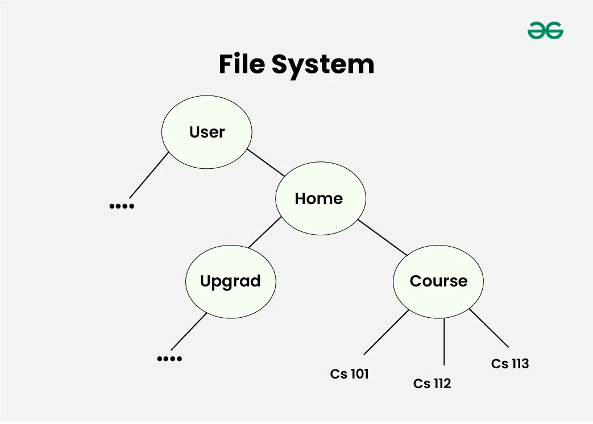

Intro Camejo — Introducción al Desarrollo de Software
Filesystem
Sistema de archivos
Clase2026
Intro Camejo
 01
01
Agenda
- .01Qué es un filesystem?
- .02En Unix, es un árbol
- .03Directorios principales
- .04Rutas absolutas vs relativas
Intro Camejo
02
Qué es un filesystem?
- Es la forma en que el sistema operativo organiza y almacena archivos en un disco.
- Define cómo se guardan, nombran y recuperan los datos.
- Sin un filesystem, el disco sería solo un conjunto de bytes sin estructura.
Intro Camejo
03
En Unix, es un árbol
- Los filesystems Unix tienen una estructura jerárquica en forma de árbol.
- Todo parte de un único directorio raíz:
/ - No existen letras de unidad como en Windows (
C:\,D:\). - Los dispositivos y discos se montan dentro del mismo árbol.

Intro Camejo
04
Directorios principales
| Directorio | Contenido |
|---|---|
/ | Raíz del sistema |
/home | Carpetas personales de los usuarios |
/etc | Archivos de configuración del sistema |
/bin | Programas esenciales (ls, cp, mv...) |
/tmp | Archivos temporales |
/var | Datos variables (logs, caches) |
/usr | Programas y bibliotecas del usuario |
Intro Camejo
05
Rutas absolutas vs relativas
- Ruta absoluta: empieza desde
/→/home/usuario/proyecto/main.c - Ruta relativa: parte del directorio actual →
proyecto/main.c .→ directorio actual..→ directorio padre
bash
cd /home/usuario # ruta absoluta
cd ./proyecto # ruta relativa
cd .. # subir un nivel
Intro Camejo
06
Fin de la clase
GRACIAS!
Intro Camejo
07
Bibliografía
Intro Camejo
08